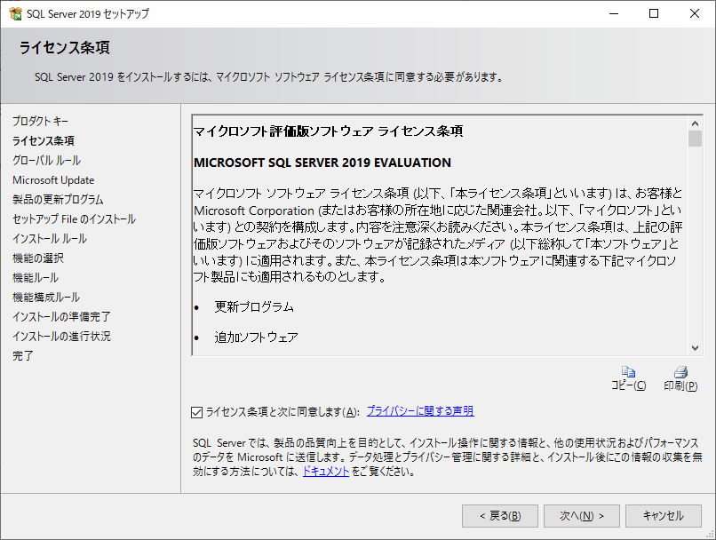
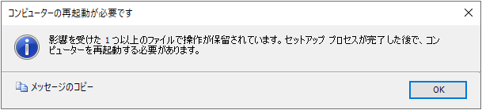
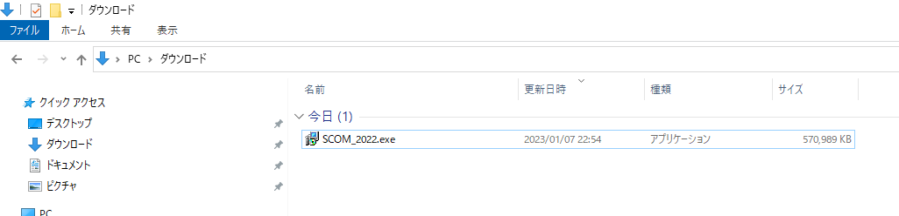
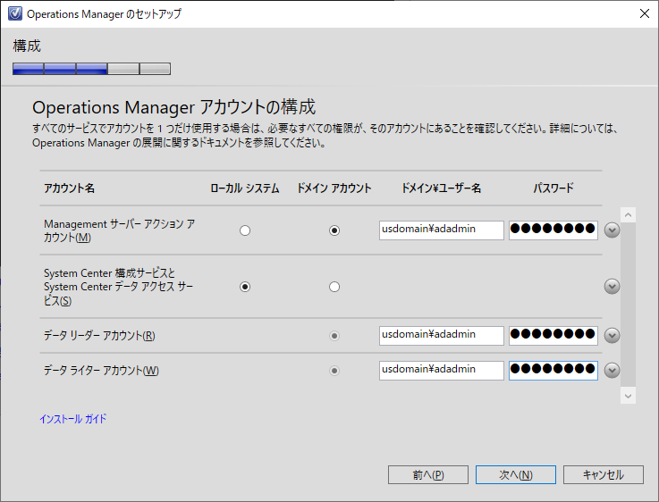

皆様こんにちは、System Center サポートチームの 石原 です。
System Center Operations Manager（以後 SCOM） は 1,000 台を超えるような大規模な IT インフラの監視をサポートする製品であり、IT インフラ環境の構成、規模、運用要件に応じて導入が必要な SCOM コンポーネントとその台数が変わりますが、検証等の目的で簡易的に環境を最短で構築されたいケースもあります。
そういったケースに備えて、本記事では、1 台の Windows Server に SCOM の主コンポーネントの SCOM 管理サーバーと SCOM コンソールをインストールして、SCOM 管理コンソールにサインインできるまでの手順を画面ショット付きで紹介します。
SCOM 導入の流れ
SCOM 導入の大まかな流れは下図の通りです。
最初に各種コンポーネントの導入を行い SCOM 環境を構築します。
SCOM 管理サーバーや SCOM コンソールなどの必須コンポーネントの導入の後、IT インフラ環境や監視要件に応じてオプション コンポーネントを導入します。
SCOM 環境の構築後、監視要件に合致した管理パックのインポートと監視対象機器の登録を行うことで監視が開始されます。
以降、運用フェーズにおいて監視設定等のチューニングを行います。
※ 構築フェーズの計画ガイド、運用フェーズのタスクについては、以下のマニュアル サイトをご参照ください。
Operations Manager 計画ガイド
Operations Manager のタスクに関するクイック リファレンス
本記事では、1 台の Windows Server にデータベース、SCOM 2022 管理サーバー、SCOM コンソールをインストールする手順 (上の図の赤枠で囲った部分の作業) を画面ショット付きで紹介します。
ドメインに参加した Windows Server 2022 (メモリ 16 GB 以上) を予め 1 台ご準備ください。
データーベース (Microsoft SQL Server 2019) の導入
SCOM では、SCOM のシステム情報、監視設定情報、アラート情報、収集したパフォーマンスデータなどの保管にデーターベースを用います。
SCOM 管理サーバーをインストールする前に最初にデーターベースの準備が必要です。
使用するデーターベースは、Microsoft SQL Server 2019 ( ※累積的な更新プログラム 8 (CU8) 以降 ) をサポートします。
ご参考：SQL Server の要件
SCOM 用の SQL Server のインストール手順は以下の通りです。
1. SQL Server 2019 のインストール モジュールを準備
① SQL Server 2019 のインストーラーと ② CU8 以降の累積的な更新プログラムをダウンロードして、SCOM をインストールする Windows Server 内にコピーします。
① SQL Server 2019 のインストーラー (評価版) は SQL Server のダウンロード よりダウンロードできます。
ダウンロードした EXE ファイル (SQL2019-SSEI-Eval.exe) を管理者で実行すると以下の画面が表示されます。
メディアのダウンロードをクリックすることで、ISO ファイル形式のインストーラーをダウンロードできます。
② SQL Server 2019 の累積的な更新プログラムは Download SQL Server® 2019 for Microsoft® Windows の最新の累積的な更新プログラム よりダウンロードできます。
本記事では、掲載日時点で最新の CU 18 を使用します。
2. SQL Server 2019 のインストール
インストールファイルの準備ができましたら、実際にインストールを実行します。
SCOM をインストールする Windows Server にドメイン管理者でサインインします。
SQL Server 2019 のインストーラーを選択して、右クリック メニューでマウントします。
マウント先のドライブで setup.exe を選択して、右クリック メニューの [管理者として実行] をクリックします。
インストール画面を表示して、[SQL Server の新規スタンドアロン インストールを実行するか、既存のインストールに機能を追加] をクリックします。
本記事では Evaluation のまま [次へ] ボタンをクリックして進みます。
ライセンス条項を確認して、 [次へ] ボタンをクリックして進みます。
本記事では [Microsoft Update を使用して更新プログラムを確認する] は未チェックのまま [次へ] ボタンをクリックして進みます。
事前検証でエラーが無いことを確認します。
[Windows ファイアウォール] の警告が出ていますが、本記事では SCOM 管理サーバーを同一サーバーにインストールするため SQL Server へのリモート接続は必須ではないことから、このまま [次へ] ボタンをクリックして進みます。SCOM に必須の [データーベース エンジン サービス] と [検索のためのフルテキスト抽出とセマンティック抽出] を選択して [次へ] ボタンをクリックして進みます。
本記事では [既定のインスタンス] のまま [次へ] ボタンをクリックして進みます。
[サーバーの構成] の [サービス アカウント] タブ画面で [SQL Server エージェント] と [SQL Server Browser] のスタートアップの種類を [自動] にします。
また、[SQL Server データベース エンジン サービスにボリューム メンテナンス タスクを実行する特権を付与する] にチェックします。
[サーバーの構成] の [照合順序] タブ画面でサポートされた日本語の照合順序 ( Japanese_CI_AS、もしくは Japanese_XJIS_100_CI_AS ) が指定されていることを確認して [次へ] ボタンをクリックして進みます。
本記事では認証モードは [Windows 認証モード] を選択し、SQL Server 管理者には [現在のユーザーの追加] ボタンをクリックして、インストール作業を実行しているユーザーを設定します。
その他の設定はそのまま [次へ] ボタンをクリックして進みます。[インストール] ボタンをクリックして、インストールを実行します。
完了画面に表示された [状態] がすべて [成功] になっていることを確認して [閉じる] ボタンをクリックします。
以上で SQL Server 2019 インスタンスの準備は完了です。
3. SQL Server 2019 の累積的な更新プログラム ( CU18 ) を適用する。
更新プログラムのインストーラーを選択して、右クリック メニューの [管理者として実行] をクリックします。
ライセンス条項を確認して、 [次へ] ボタンをクリックして進みます。
MSSQLSERVER にチェックが付いていることを確認して、 [次へ] ボタンをクリックして進みます。
ファイルの確認が完了したら、 [次へ] ボタンをクリックして進みます。
[更新] ボタンをクリックして、更新プログラムのインストールを実行します。
完了画面に表示された [状態] がすべて [成功] になっていることを確認して [閉じる] ボタンをクリックします。
以上で SCOM 用の データーベースの準備は完了です。
※ 以下の警告が表示された場合は、更新プログラムのインストール完了後、一度 Windows Server を再起動します。

==================
【補足】
検証用の SCOM 管理サーバーの最短構築に際しては必須ではありませんが、SQL Server の管理に有用な SQL Server Management Studio (SSMS) はインストールされることを推奨します。
SSMS は、SQL Server Management Studio (SSMS) のダウンロード からダウンロードできます。
==================
SCOM 管理サーバーと SCOM コンソールのインストール
データーベースの準備が完了したら、いよいよ SCOM 管理サーバーと SCOM コンソールのインストールです。
詳細な手順については、以下のマニュアル サイトをご参照ください。
・Operations Manager 管理サーバーをインストールする方法
・オペレーション コンソールをインストールする方法
SCOM 管理サーバーと SCOM コンソールのインストール手順は以下の通りです。
1. SCOM 2022 のインストール モジュールを準備
Microsoft Evaluation Center の System Center 2022 | Microsoft Evaluation Center からインストール ファイル [SCOM_2022.exe] をダウンロードします。
ダウンロードしたファイルを SCOM をインストールする Windows Server 内にコピーします。

2. インストール ファイルを解凍する
SCOM をインストールする Windows Server にドメイン管理者でサインインします。
SCOM 2022 のインストーラーを選択して、右クリック メニューの [管理者として実行] をクリックします。
インストール ファイル解凍ウィザードが開きますので、[Next] ボタンをクリックして進みます。
ライセンス条項を確認して、 [Next] ボタンをクリックして進みます。
インストール ファイルの解凍先を確認して、 [Next] ボタンをクリックして進みます。
[Extract] ボタンをクリックして解凍を実行します。
[Finish] ボタンをクリックして、ウィザードを閉じます。
[C:\System Center Operations Manager] フォルダ配下にインストール用ファイルが展開されていることが確認できます。
3. SCOM 管理サーバーと SCOM コンソールのインストール
SCOM をインストールする Windows Server にドメイン管理者でサインインします。
[C:\System Center Operations Manager] フォルダ配下の [Setup.exe] を選択して、右クリック メニューの [管理者として実行] をクリックします。
インストール ウィザードが起動するので、[インストール] をクリックします。
インストールする機能の選択画面で [Management サーバー] と [オペレーション コンソール] にチェックを入れて、[次へ] ボタンをクリックして進みます。
[Management サーバー] が SCOM 管理サーバー、[オペレーション コンソール] が SCOM コンソールです。
オプション機能の [Web コンソール] と [レポート サーバー] は本記事では外します。
インストール先フォルダを指定して、[次へ] ボタンをクリックして進みます。
標準のインストール先は [C:\Program Files\Microsoft System Center\Operations Manager] です。前提条件の確認画面でエラーが表示されていないことを確認して、[次へ] ボタンをクリックして進みます。
※ Windows Update の実施後など、サーバーが再起動を控えている状態の場合、Windows の再起動を促す警告が表示されます。
警告を無視して [次へ] ボタンをクリックしてそのまま進めても問題なくインストールが完了する場合もありますが、Windows の再起動を促す警告が表示された場合は、念のため Windows の再起動を行ってください。管理グループ名を入力して、[次へ] ボタンをクリックして進みます。
ここでは管理グループ名を [SCOM2022] とします。ライセンス条項を確認して、 [次へ] ボタンをクリックして進みます。
これから SQL Server 上に SCOM で使用するデーターベースを 2 つ構成します。
1 つ目は オペレーション データベース (データーベース名：OperationsManager) です。
既定のインスタンスとして SQL Server をインストールしましたので、[ サーバー名とインスタンス名] にはサーバーのコンピューター名だけを入力して、 [次へ] ボタンをクリックして進みます。次にデータ ウェアハウス データベース (データーベース名：OperationsManagerDW) の構成を入力します。
既定のインスタンスとして SQL Server をインストールしましたので、[ サーバー名とインスタンス名] にはサーバーのコンピューター名だけを入力して、 [次へ] ボタンをクリックして進みます。[Operations Manager アカウントの構成] 画面でアカウント情報を入力して、 [次へ] ボタンをクリックして進みます。
本記事では、サーバーの管理者でかつ SQL Server インストール時に SQL Server の管理者に設定したドメイン管理者を指定しました。

※ ドメイン管理者を指定した場合、以下の警告が表示されます。
今回は検証環境構築が目的のため [OK] ボタンをクリックしてこのまま進めますが、以下のマニュアルサイトをご参考に必要に応じて SCOM 専用のアカウントをご準備ください。
ご参考：System Center Operations Manager の展開 | 必要なアカウント[診断と使用状況のデータ] を確認して、 [次へ] ボタンをクリックして進みます。
本記事では [Microsoft Update] は [オフ] を選択して [次へ] ボタンをクリックして進みます。
[インストールの要約] を確認して、 [インストール] ボタンをインストールします。
完了画面でエラーが出ていないことを確認して、[閉じる] ボタンをクリックしてウィザードを閉じます。
評価版をインストールしましたので、ライセンス入手後に適用する方法が警告表示されます。
また、コンピューターを再起動する必要がある旨の警告が表示されますので、一度、Windows を再起動します。
以上で、SCOM 管理サーバーと SCOM コンソールのインストールが完了です。
SCOM コンソールを起動して SCOM にログインする
SCOM をインストールした Windows Server にドメイン管理者でサインインします。
スタートメニューから [Microsoft System Center] -> [Operations Console] をクリックします。
SCOM コンソールにログインします。
Windows Server に SCOM のインストールで使用したドメイン管理者でサインインした場合は、自動的に SCOM コンソールにログインできます。
以上で、SCOM 管理サーバーを導入して、SCOM コンソールにログイン可能になりました。
このあと、[管理] 画面で監視要件に合わせて管理パックのインポートを行います。
その後、監視機器を登録することで監視が開始されます。
これらの手順についても、今後ブログで紹介したいと考えております。
ご参考： Operations Manager の監視シナリオ
Windows 上のエージェントの検出とインストール
UNIX および Linux 上のエージェントの検出とインストール
SCOM 導入の流れ で記載しました通り、SCOM にはインフラ環境、監視要件によって導入が必要なオプション コンポーネントが存在します。
長期レポートを参照するために必要な 『レポート機能』 やパフォーマンス データやアラートの確認だけを行うSCOM の一般操作者が存在する場合に便利な 『Web コンソール』機能などは、多くのお客様環境でご利用いただいているコンポーネントです。
また、メンテナンス時の可用性や耐障害性を考慮して、複数台の SCOM 管理サーバーを導入して管理グループを構成することや、データーベースを SQL Server AlwaysOn 可用性グループで構成するなど、オール イン ワン以外の構成も存在します。
SCOM 環境の構成についても、要件定義や初期の設計フェーズにおいて検討いただければと存じます。
本番環境の構築においては多数の考慮事項がございますが、まずは今回の手順を進めていただくことで SCOM コンソールにログインすることができたと思います。
実際に SCOM コンソールにログインして、SCOM の画面構成、機能、操作性など検証いただければ幸いです。
※本情報の内容（添付文書、リンク先などを含む）は、作成日時点でのものであり、予告なく変更される場合があります。